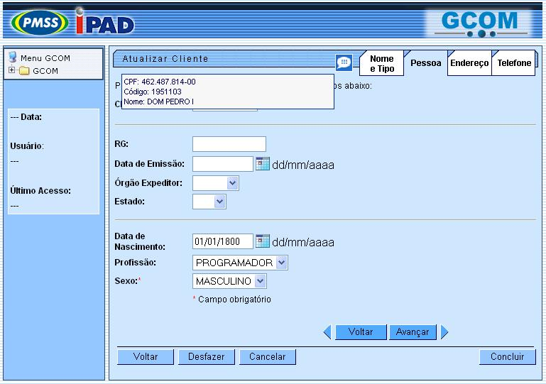

As telas do tipo aba são criadas quando o volume de informações a serem cadastradas é muito grande, o que tornaria a anti-operacional o cadastramento de informações, obrigando o usuário a ficar rolando a tela.
Com a criação das abas, ou pastas, podemos ordenar o cadastramento por aba, agrupando as informações de acordo com a similaridade entre elas, tornando o processo de cadastramento mais amigável e intuitivo para o usuário.
Veja, abaixo, o modelo de uma tela do tipo aba num processo de inserção:

As abas, ou pastas, ficam posicionadas no canto superior direito da tela.
As abas inativas ficam na cor branca, e a ativa na azul. No caso do exemplo acima, a 2ª aba, denominada Pessoa, é a que está ativa.
Você pode navegar entre as abas das seguintes maneiras:
- Clicando sobre a aba.
- Clicando nos botões
 ,
ou
,
ou 
- Clicando nos botões
das setas
 e
e  , para,
respectivamente, avançar e voltar nas abas.
, para,
respectivamente, avançar e voltar nas abas.
No final das páginas com abas, os botões estão separados por uma linha horizontal.
Os botões acima da linha horizontal estão relacionados com a aba ativa e com o processo de navegação entre as abas.
Os botões que estão abaixo da linha horizontal, estão relacionados com todas as abas. Veja, na tabela abaixo, uma descrição da funcionalidade de cada um dos botões que estão abaixo da linha horizontal.
|
Botão |
Descrição |
|---|---|
 |
Utilize este botão para solicitar ao sistema a conclusão do processo que está sendo executado. Neste caso, é necessário que todos os campos, de todas as abas, estejam preenchidos corretamente. Caso exista alguma inconsistência, o sistema emitirá a mensagem de crítica correspondente. |
 |
Utilize este botão para fazer com que a tela volte ao seu estado inicial de exibição. |
 |
Utilize este botão para fazer com que o sistema encerre, sem salvar, o que está sendo feito, e volte para a tela principal. |
Funcionalidade
das telas de aba em um processo de atualização
Nas telas
do processo de
atualização com abas, os procedimentos
são os
mesmos do processo de inserção. Mas
são
acrescentadas duas novas funcionalidades.  Esta
funcionalidade permite ao usuário visualizar um resumo
dos dados do objeto que esta sendo atualizado.
Esta
funcionalidade permite ao usuário visualizar um resumo
dos dados do objeto que esta sendo atualizado. Este
botão, que fica abaixo da linha horizontal, tem como
objetivo sair da tela de abas e voltar para a tela de filtro. Seja a
tela "Manter" ou "Filtrar".
Este
botão, que fica abaixo da linha horizontal, tem como
objetivo sair da tela de abas e voltar para a tela de filtro. Seja a
tela "Manter" ou "Filtrar".- Não confundir os botões
"Voltar" existentes nas telas.
- O botão que fica acima da linha horizontal, tem como objetivo voltar para a aba anterior.
- O botal que fica abaixo da linha horizontal, tem como objetivo sair da tela de abas e voltar para a tela de filtro.
